CS 8803 CGA - Differentiable Rasterization
Depth Test
In rasterization-based rendering, we use of a depth buffer to prevent triangles rendering in the front while they’re supposed to be behind other triangles.
Depth Buffer (Z Buffer)
- The depth-buffer is a buffer that, just like the color buffer (that stores all the fragment colors: the visual output), stores information per fragment and has the same width and height as the color buffer.
- When depth testing is enabled, OpenGL tests the depth value of a fragment against the content of the depth buffer. OpenGL performs a depth test and if this test passes, the fragment is rendered and the depth buffer is updated with the new depth value.
- If the depth test fails, the fragment is discarded.
Rasterization with depth buffer
- Project vertices to 2D image space
- Rasterize triangle: find which pixels should be lit
- Compute per-pixel color
- Test visibility (Z-buffer), update frame buffer color
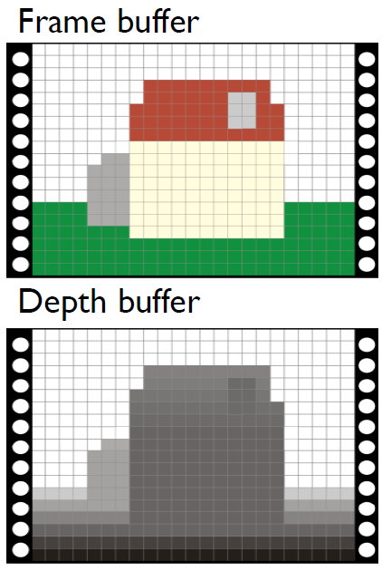
Pseudocode for Depth Test
1 | |
We render the triangle’s color into this pixel only when its depth value is smaller than the depth in the current depth buffer
Alpha Blending
- Blending in OpenGL is known as the technique to render transparent object.
- Transparency is all about objects not having a solid color, but having a combination of colors from the object itself and any other object behind it with varying intensity.
- A colored glass window is a transparent object; the glass has a color of its own, but the resulting color contains the colors of all the objects behind the glass as well.
Alpha Channel
- The amount of transparency of an object is defined by its color’s alpha value.
- The alpha color value is the 4th component of a color vector
- 1.0 indicates completely opaque, 0.0 indicates completely transparent.
- An alpha value of 0.5 tells us the object’s color consist of 50% of its own color and 50% of the colors behind the object.
Naïve Implementation: Discarding Fragments in the Shader
- In the fragment shader, we can check the alpha value of each fragment and decide to discard it if its alpha value is below a threshold (those parts with a really small alpha value are supposed to be transparent).
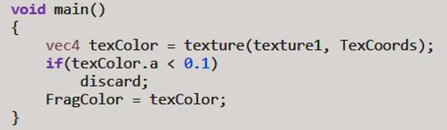
Advanced Implementation: Blending with Alpha Value
- While discarding fragments is great and all, it doesn’t give us the flexibility to render semi-transparent images; we either render the fragment or completely discard it.
- To render images with different levels of transparency we have to enableblending, we can do glEnable(GL_BLEND) (turn on alpha blending in fragment shader in OpenGL).
Then the shader will blend two colors based on the blending equation below.
: The source color vector. This is the color output of the fragment shader.
: The destination color vector. This is the color vector that is currently stored in the color buffer.
: The source factor value. Sets the impact of the alpha value on the source color.
: The destination factor value. Sets the impact of the alpha value on the destination color.
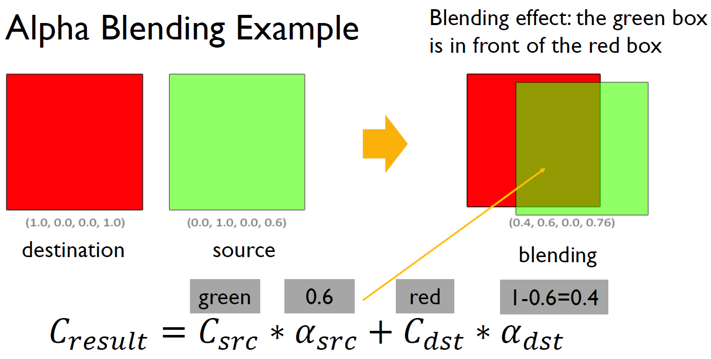
- The glBlendFunc(GLenum sfactor, GLenum dfactor) function expects two parameters that set the option for the source and destination factor.
- OpenGL defined quite a few options for us to set of which we’ll list the most common options below.
The order of objects in the rendering sequence matters
As described in the blending function, we need to figure out which object is source and which one is destination. It means that the order of rendering objects matters - different orders result in different effect (maybe incorrect results).
-
[Transparent objects] If we only have transparent objects, to make blending work for multiple transparent objects we have to draw the most distant object first and the closest object last (back to front).
-
[Non-transparent objects] If we only have non-transparent objects, the order doesn’t matter. The normal non-blended objects can still be drawn as normal using the depth buffer so they don’t have to be sorted. We do have to make sure they are drawn first before drawing the (sorted) transparent objects.
-
[Mix of objects] When drawing a scene with non-transparent and transparent objects, the general outline is usually as follows:
- Draw all opaque objects first.
- Sort all the transparent objects.
- Draw all the transparent objects in sorted order.
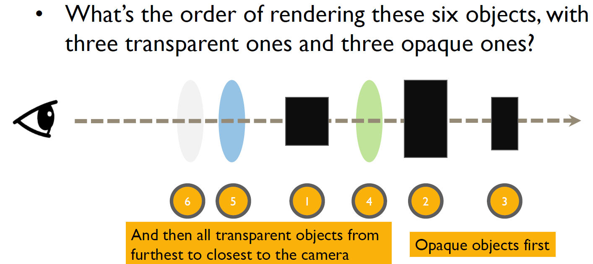
This idea has been used by Nvidia for rendering particle smoke
- First calculate a vector which is half way between the view direction and light direction.
- We then render the volume as a series of slices perpendicular to this half-angle vector by accumulating particle splats on the screen buffers.
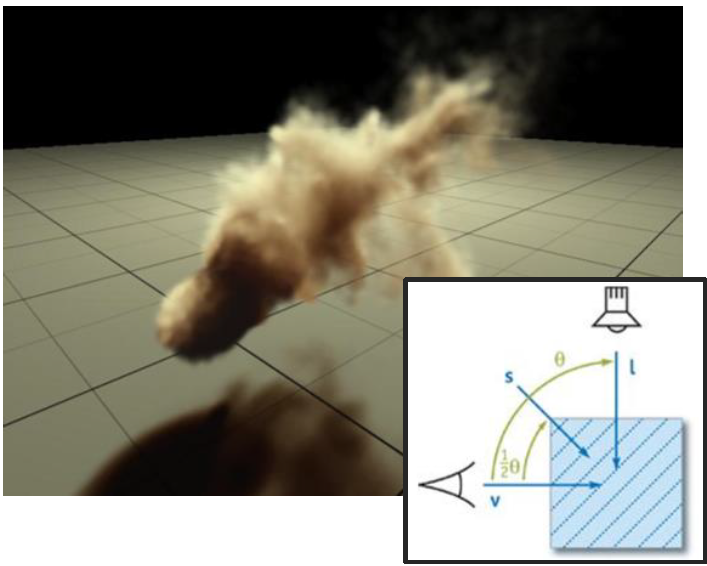
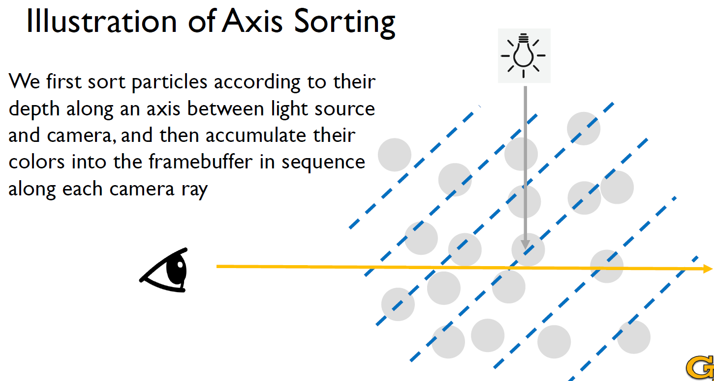
In ray tracing, when going through each ray, we are implicitly visiting objects in a sorted order.
Forward Pass of Surface Splat Rendering
The forward process is the same as the point-based rendering pipeline as mentioned previously L09-Positional Encoding:
Shading -> Warping -> Visibility -> Filtering
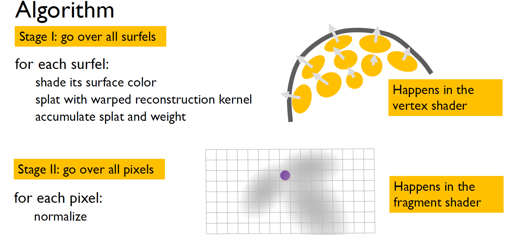
Backward Pass of Surface Splat Rendering
Gradient Approximation
- The backward pass refers to the information flow from the rendered image to the scene parameters based on approximating the gradient.
If the splat is not visible on the pixel
-
When the splat is invisible, and it is moving away from the camera, the gradient should always be zero (since it’s impossible to become visible)
-
When the splat is invisible, and it is moving toward the camera, the gradient can be approximated by a linear function (we see a potential that this splat can be visible after some points and we’d like to demonstrate this trend):

Here, and represent changes in intensity and position.
If the splat is visible on the pixel
-
When the splat is visible, and it is moving toward the camera or moving away from the camera, the gradient can be approximated by its numerical gradient:
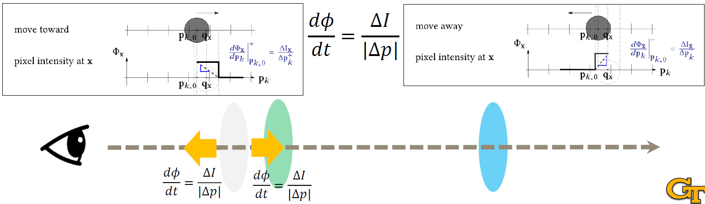
Gradient Approximation in 3D
- The splat is not visible at the pixel and the pixel is not rendered by any other ellipses in front of the splat;
- The splat is not visible at the pixel and the pixel is rendered by other ellipses in front of the splat (the splat is behind other splats);
- The splat is visible at x.
Here, “splat” refers to the projected contribution of a 3D Gaussian (or surfel) onto the 2D image plane during rendering.
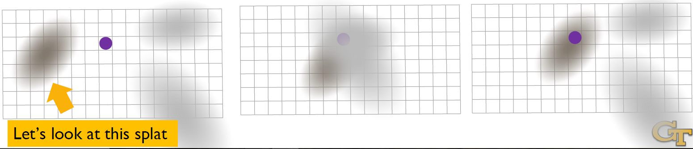
Regularization and Loss
Why do we need regularization?
- The unstructured nature of point clouds, while enabling extensive topology changes, presents a considerable challenge for optimization.
- Gradient computation is fully parallelized, causing points to move independently of one another.
- Since point movements typically result in minor and sparse changes in the rendered image, the gradients associated with individual points lack the structured behavior observed in mesh-based gradients.
- Without appropriate regularization, the optimization can easily lead to convergence toward local minima.
Regularization: Repulsion and Projection
- Need for Regularization:
- Prevents overfitting to image artifacts.
- Maintains uniform point distribution.
- Techniques:
- Repulsion Term: Encourages even distribution by maximizing inter-point distances. It’s aimed at generating uniform point distributions by maximizing the distances between its neighbors on a local projection plane.
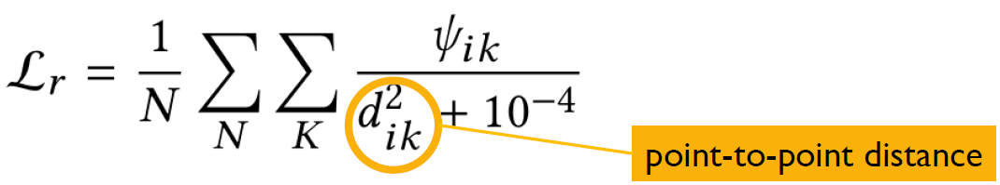 - Projection Term: Aligns points to local tangent planes. It preserves clean surfaces by minimizing the distance from the point to the surface tangent plane.
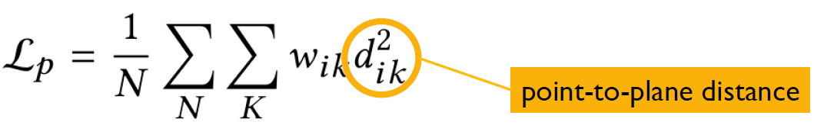
- Repulsion Term: Encourages even distribution by maximizing inter-point distances. It’s aimed at generating uniform point distributions by maximizing the distances between its neighbors on a local projection plane.
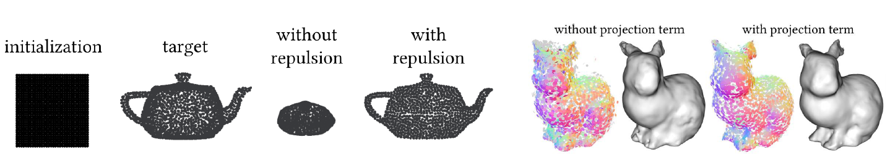
Loss Function
The total optimization objective include three terms: the pixel loss, projection loss, and repulsion loss. However, this loss function was not used in Gaussian Splatting. Gaussian Splatting uses a large number of splats to achieve a much simpler loss function.
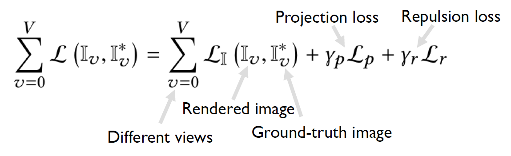